![]()
# Call libraries
# For mixture models
library(mclust)
library(mixtools)
library(mdir)
# For visualisation
library(pheatmap)
library(ggplot2)
# For ``gather`` function
library(tidyr)
# For the pipe and some extensions
library(magrittr)
# Set seed for reproducibility
set.seed(1)
col_pal <- (grDevices::colorRampPalette(c("#146EB4", "white", "#FF9900")))(100)
ggplot2::theme_set(
ggplot2::theme_bw()
+ ggplot2::theme(strip.background = ggplot2::element_rect(fill = "#21677e"))
+ ggplot2::theme(strip.text = ggplot2::element_text(colour = "white"))
)This vignette explores clustering count data and the impact of some data transforms on this.
We will consider a \(\log\)-transform and the mean-centring and scaling (i.e., standardisation). For a vector of data \(X\), these are:
\[\begin{align} \text{Log-transform: } X \to \log(1 + X), \\ \text{Standardisation: } X \to \frac{X - \bar{X}}{\bar{\sigma}}, \end{align}\]
where \(\bar{X}\) is the empirical mean of \(X\), and \(\bar{\sigma}\) is the empirical standard deviation.
Generate count data
First we create 5 subpopulations with some peturbation about a mean.
# Example of transforms on poission data
n <- 100
beta_0 <- c(1, 1, 5, 6, 2, 2)
beta_1 <- c(0.2, 0.2, 1, 2.5, 2, 2)
# Generate random data
x <- runif(n = n, min = 0, max = 2.0)
# Generate data from 4 poisson regression models
beta_1_mat <- sapply(beta_1, `*`, x)
exponent_mat <- t(apply(beta_1_mat, 1, `+`, t(beta_0)))
poisson_data <- apply(exp(exponent_mat), 2, function(x) {
rpois(n = n, lambda = x)
})
# Put this data into a data.frame
poisson_df <- data.frame(
Count_1 = c(poisson_data[, 1], poisson_data[, 3]),
Count_2 = c(poisson_data[, 2], poisson_data[, 4]),
Count_3 = c(poisson_data[, 5], poisson_data[, 6])
)Create some data that follows a sigmoidal curve:
# some continuous variables
x1 <- runif(2 * n, -2, -1)
x2 <- runif(2 * n, 1, 2)
x3 <- runif(2 * n, -1, 1)
# linear combination with a bias
z <- 1 + 8 * x1 + 7.5 * x2 + 5 * x3
# pass through an inverse logit function and move to a scale similar to a count
pr <- round(1 / (1 + exp(-z)) * 1000)
plot(z, pr, main = "Discere sigmoidal data")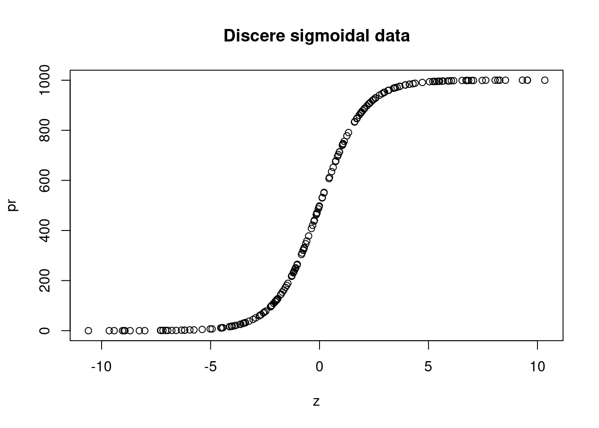
hist(pr, main = "Discere sigmoidal data")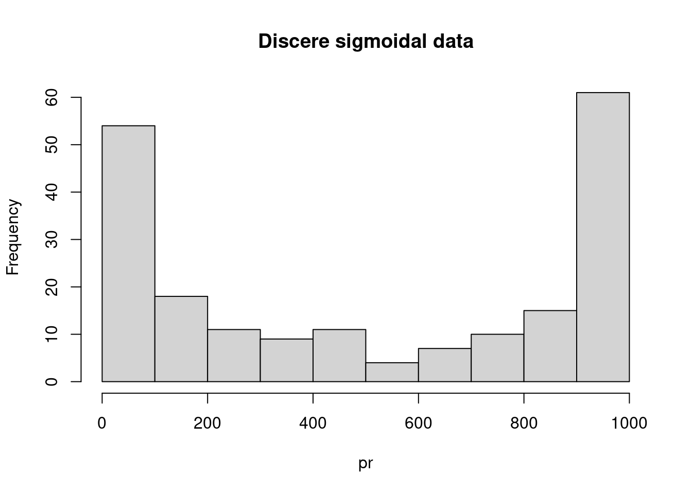
We add a feature generated from a different model; this follows a sigmoidal curve. We combine this with our previously generated data.
# Arbitrary step to have the high counts align in each dataset imperfectly but well
# enough to have less sub-populations emerge from the combined dataset
fractions <- 8
new_order <- order(pr)
flag <- as.numeric(cut(pr,
breaks = quantile(pr, probs = seq(0, 1, 1 / fractions)),
include.lowest = T,
labels = 1:fractions
))
flag[flag %in% 3:4] <- fractions + 1
# Combine the generated data
my_data <- as.data.frame(cbind(poisson_df, pr[order(flag)]))
# Assign row and column names
colnames(my_data) <- c(paste0("Count_", 1:(ncol(poisson_df) + 1)))
row.names(my_data) <- paste("Person_", 1:nrow(my_data))
# Of some use later
n_var <- ncol(my_data)
head(my_data) Count_1 Count_2 Count_3 Count_4
Person_ 1 4 2 18 0
Person_ 2 2 2 30 3
Person_ 3 2 3 89 11
Person_ 4 9 3 269 0
Person_ 5 3 1 23 2
Person_ 6 2 4 238 0Now we apply our transforms.
# Log transform
log_data <- log(1 + my_data) %>% as.data.frame()
# Mean centre and standardise the standard deviation within each variable
scaled_data <- apply(my_data, 2, scale) %>%
as.data.frame() |>
set_rownames(row.names(my_data))
# Let's now try combining these two
scaled_log_data <- apply(log(1 + my_data), 2, scale) %>%
as.data.frame() |>
set_rownames(row.names(my_data))Let us look at the distributions described by each variable for each dataset. We expect there to be two subpopulations present under variables “Count_1”, “Count_2” and “Count_4”, and a single population under “Count_3”.
ggplot(gather(my_data), aes(value)) +
geom_histogram() +
facet_wrap(~key, scales = "free_x") +
labs(
title = "Distribution of original data",
x = "Count",
y = "Frequency"
)`stat_bin()` using `bins = 30`. Pick better value with `binwidth`.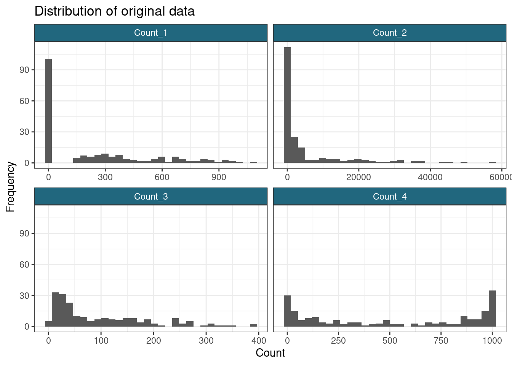
pheatmap(my_data,
color = col_pal,
main = "Generated data",
show_rownames = FALSE,
cluster_cols = FALSE
)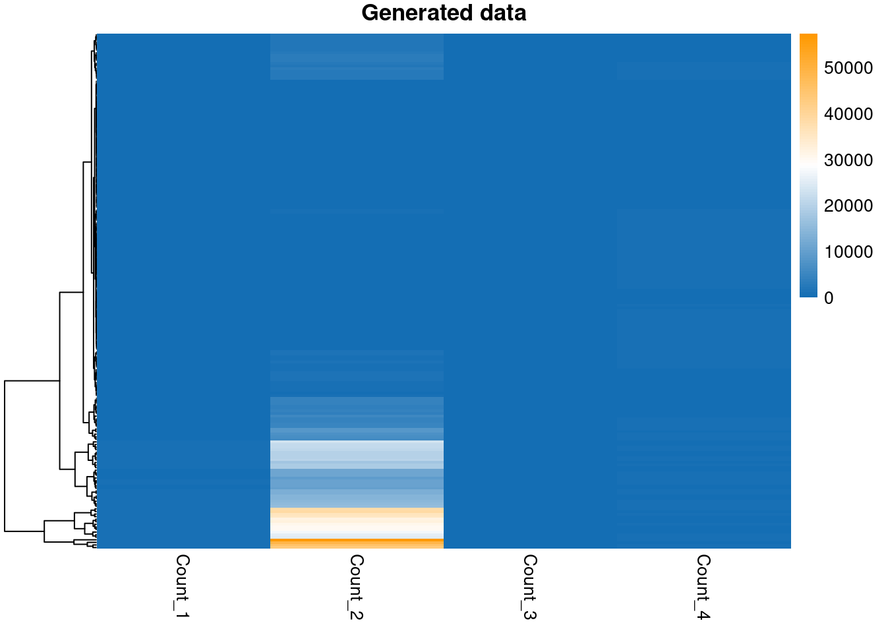
ggplot(gather(log_data), aes(value)) +
geom_histogram() +
facet_wrap(~key, scales = "free_x") +
labs(
title = "Distribution of log-transformed data",
x = "Count",
y = "Frequency"
)`stat_bin()` using `bins = 30`. Pick better value with `binwidth`.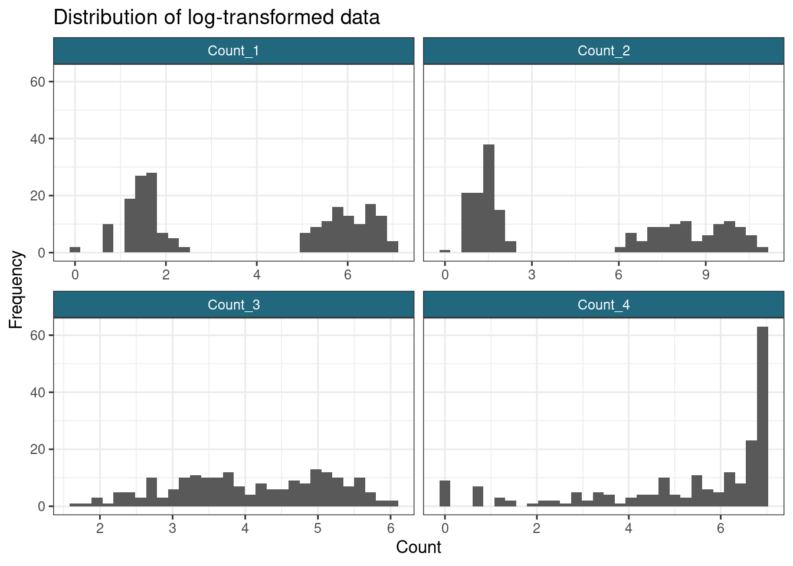
pheatmap(log_data,
color = col_pal,
main = "Log-transformed data",
show_rownames = FALSE,
cluster_cols = FALSE
)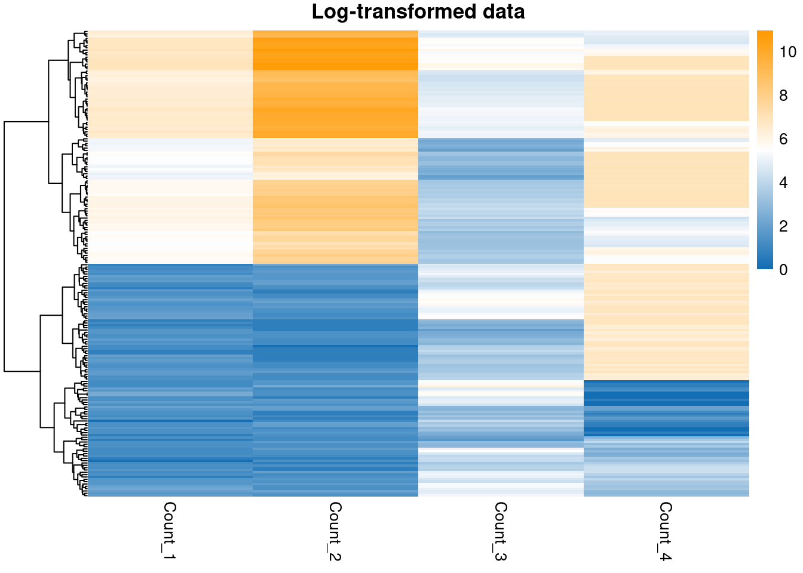
ggplot(gather(scaled_data), aes(value)) +
geom_histogram() +
facet_wrap(~key, scales = "free_x") +
labs(
title = "Distribution of standardised data",
x = "Count",
y = "Frequency"
)`stat_bin()` using `bins = 30`. Pick better value with `binwidth`.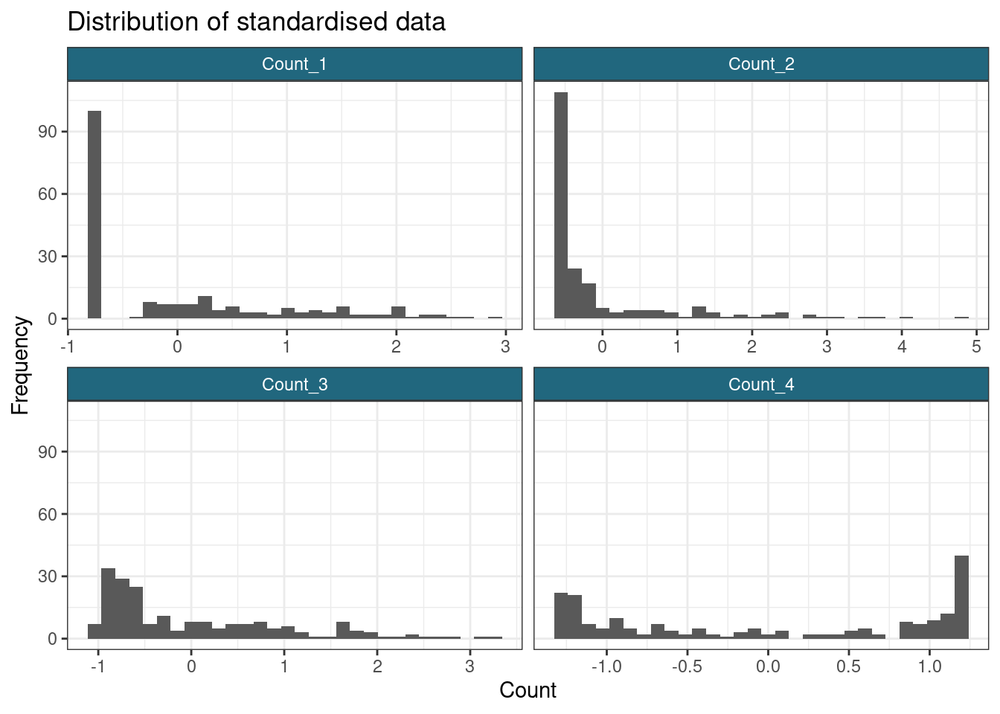
pheatmap(scaled_data,
color = col_pal,
main = "Standardised data",
show_rownames = FALSE,
cluster_cols = FALSE
)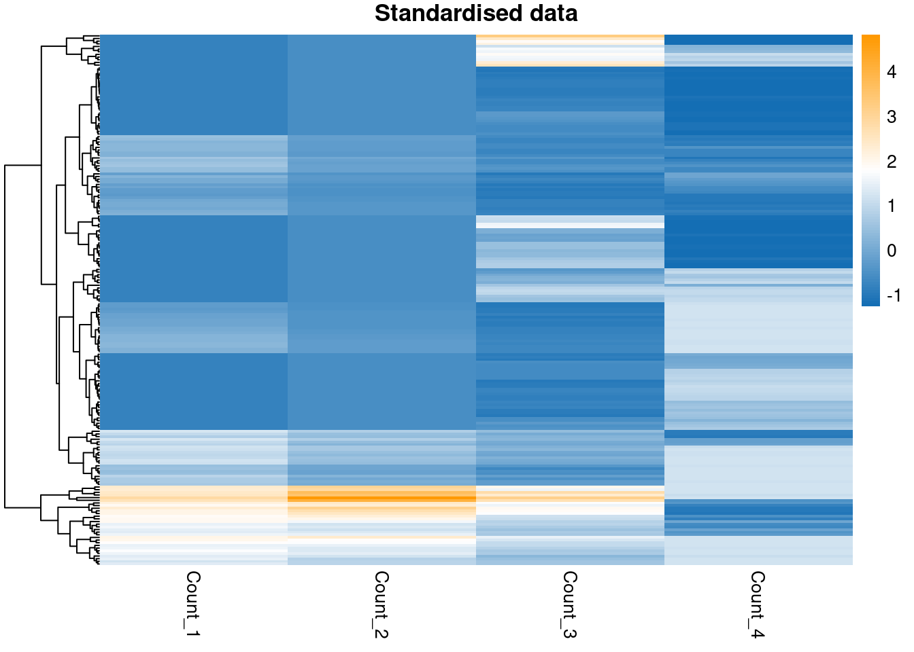
ggplot(gather(scaled_log_data), aes(value)) +
geom_histogram() +
facet_wrap(~key, scales = "free_x") +
labs(
title = "Distribution of standardised log-transformed data",
x = "Count",
y = "Frequency"
)`stat_bin()` using `bins = 30`. Pick better value with `binwidth`.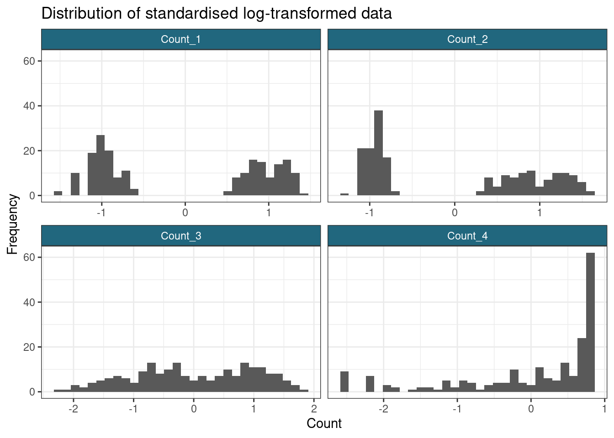
pheatmap(scaled_log_data,
color = col_pal,
main = "Standardised log-transformed data",
show_rownames = FALSE,
cluster_cols = FALSE
)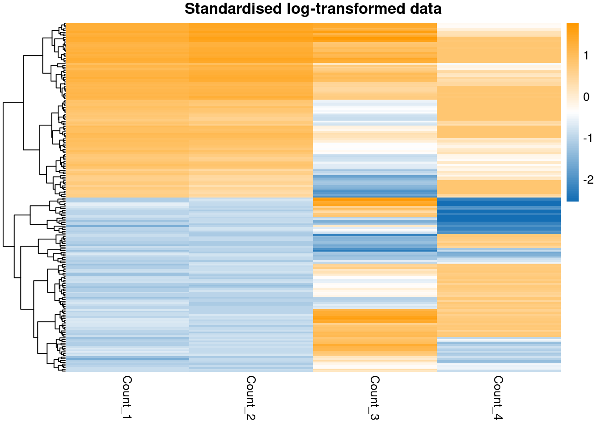
Note that standardising has not impacted how well-separated the groups in the data are, it has merely changed the scale and location of the data.
In terms of separating out the subpopulations, it appears that the \(\log\)-transform has worked most effectively for the first two variables, but does not succeed with the sigmoidal data. This reminds us that a single transform might not be appropriate for an entire dataset; however, many datasets are too large to check each feature manually, this is simply to make the point that we often lose some signal and minimising this is only so feasible.
We will now attempt to infer the latent clustering labels using mixture models. I use the Mclust function from the mclust package and the mvnormalmixEM from mixtools to create Gaussian mixture models. We will look at the clustering predicted for the data using pheatmap.
I create some labels for the sigmoidal data to keep track of the tails - we hope these are allocated correctly and are probably the hardest sub-populations to untangle for the \(\log\)-transformed data. These labels are based on which tertiles the sigmoidal data falls into and is intended as a rough guide of how well the models deconstruct the sigmoidal data.
# Keep track of the sigmoidal data by assigning a label based on quantiles
n_labels <- 3
sig_labels <- cut(my_data[, n_var],
breaks = quantile(my_data[, n_var], probs = seq(0, 1, 1 / n_labels)),
include.lowest = T,
labels = 1:n_labels
)
# Create a data.frame to annotate the heatmaps
annotation_row <- data.frame(Sig_pop = as.factor(sig_labels))
row.names(annotation_row) <- row.names(my_data)Model fitting
Now attempt to fit models. I find that mixtools is less robust to mclust (struggles to solve the same datasets, even with the hclust initialisation). For this reason I comment out the code for fitting the mixtools model.
model_functions <- c(
"Mclust",
"mvnormalmixEM"
)
transforms <- c(
"Original",
"Log",
"Standardise"
)
datasets <- list(my_data, log_data, scaled_data) %>%
set_names(transforms)
n_datasets <- length(datasets)
n_models <- length(model_functions)
model_out <- vector("list", n_models) %>%
set_names(model_functions)
model_bic <- model_out
for (i in 1:n_models) {
model_out[[i]] <- vector("list", n_datasets) %>%
set_names(transforms)
model_bic[[i]] <- model_out[[i]]
if (model_functions[i] == "Mclust") {
for (j in 1:n_datasets) {
# do.call(model_functions[i], list(datasets[[j]])
model_out[[i]][[j]] <- Mclust(datasets[[j]], G = 2:15)
model_bic[[i]][[j]] <- mclustBIC(datasets[[j]])
}
}
# if (model_functions[i] == "mvnormalmixEM") {
# for (j in 1:n_datasets) {
# for(k in seq(2, 15)) {
# initial_clusterings <- datasets[[j]] |>
# dist() |>
# hclust() |>
# cutree(k = k)
# initial_means <- vector("list", k)
# for(l in seq(1, k)) {
# cluster_inds <- which(initial_clusterings == l)
# initial_means[[l]] <- colMeans(datasets[[j]][cluster_inds, ])
# }
#
# model_out[[i]][[j]] <- mvnormalmixEM(datasets[[j]], k = k, mu = initial_means)
# }
# }
# }
}We can now inspect the model using several different visualisations. We can investigate the optimal number of components under the Bayesian Information Criterion (BIC) and we can look at the clusterings as defined by pairs of variables. I will look at the models defined on the scaled data and the log-transformed data. The BIC vs \(k\) plot also shows which of the possible types of covariance structure allowed by Mclust is optimal (this is the difference models listed and plotted).
summary(model_out[[1]][[2]])----------------------------------------------------
Gaussian finite mixture model fitted by EM algorithm
----------------------------------------------------
Mclust VVE (ellipsoidal, equal orientation) model with 8 components:
log-likelihood n df BIC ICL
-456.7326 200 77 -1321.436 -1331.303
Clustering table:
1 2 3 4 5 6 7 8
21 29 30 20 49 17 7 27 plot(model_out[[1]][[2]], what = "classification")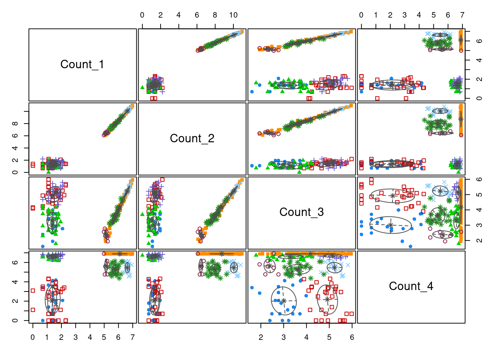
plot(model_out[[1]][[2]], what = "BIC")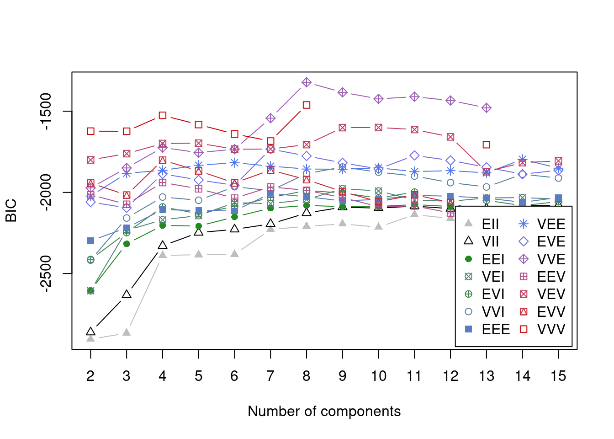
summary(model_out[[1]][[3]])----------------------------------------------------
Gaussian finite mixture model fitted by EM algorithm
----------------------------------------------------
Mclust VVV (ellipsoidal, varying volume, shape, and orientation) model with 8
components:
log-likelihood n df BIC ICL
990.4389 200 119 1350.378 1344.508
Clustering table:
1 2 3 4 5 6 7 8
20 30 25 25 23 24 23 30 plot(model_out[[1]][[3]], what = "classification")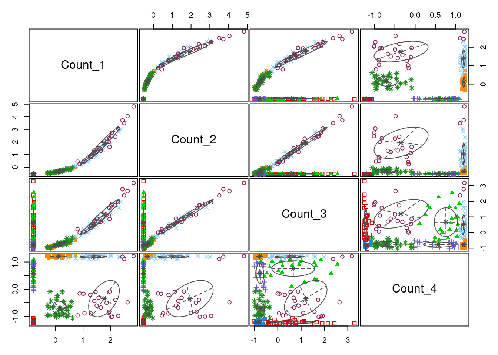
plot(model_out[[1]][[3]], what = "BIC")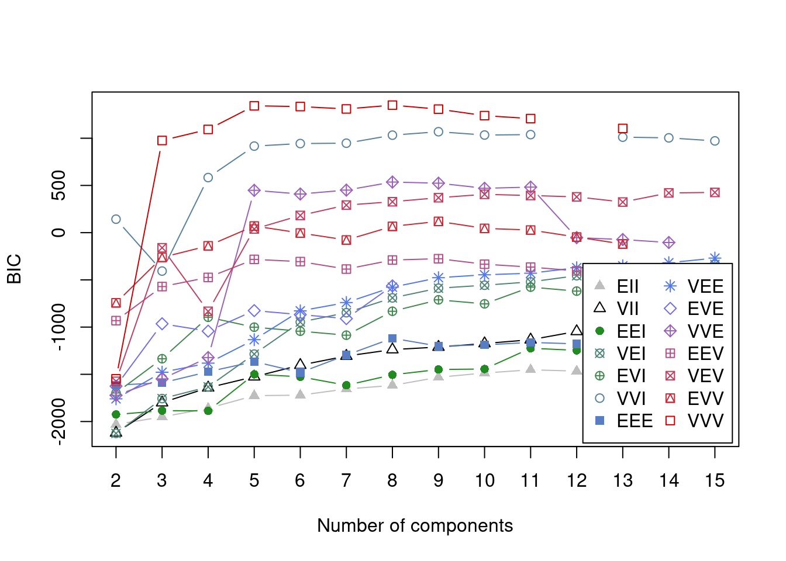
We can see that by using a vector of possible components (the input G = 2:15 in the call to Mclust), we have captured the optimal value. This is the global maximum in the plot comparing BIC to number of components for each model allowed by Mclust. One thing to notice here is that the two models do agree on the optimal number of components (8), but that this is not expected to occurr, particularly for datasets of greater dimension. Another point is that the type of model that best fits the scaled data is the “EVE” model in comparison to the “VVV” model. This is a simpler model where each cluster has more restrictions on its parameters - thus the EVE model is easier to run (this is worth remembering if log-transformed data demands to complex a model computationally).
In the plots comparing clusterings across variables, we can see that the model defined on the log-transformed data separates the two sub-populations in \(Count_1\) and \(Count_2\) with much greater confidence than the model defined on the standardised data. One can also see that \(Count_3\), which has no sub-population structure, is not contributing significantly to the cluster allocaitons - the data is pretty uniformly distributed across the axis defined by \(Count_3\), no clear partitions emerging. One can see that the sigmoidal structure in \(Count_4\) is captured quie well by the log model.
Results
Let us now inspect the clustering inferred I ignore the original data as the scaling makes inspecting the data unfeasible.
labelling <- lapply(model_out$Mclust, function(x) {
x$classification
}) |>
as.data.frame() |>
set_rownames(row.names(my_data))
annotation_row <- labelling
pheatmap(log_data[order(annotation_row[, 1]), ],
cluster_rows = F,
cluster_cols = F,
annotation_row = annotation_row,
main = "Log-transformed data:\nOrdered by clustering of original data"
)pheatmap(log_data[order(annotation_row[, 2]), ],
cluster_rows = F,
cluster_cols = F,
annotation_row = annotation_row,
main = "Log-transformed data:\nOrdered by clustering of log-transformed data"
)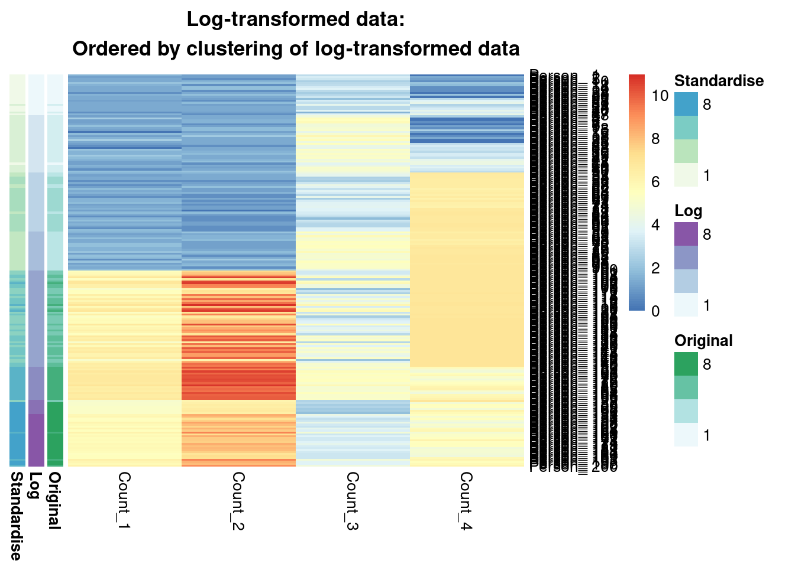
pheatmap(log_data[order(annotation_row[, 3]), ],
cluster_rows = F,
cluster_cols = F,
annotation_row = annotation_row,
main = "Log-transformed data:\nOrdered by clustering of scaled data"
)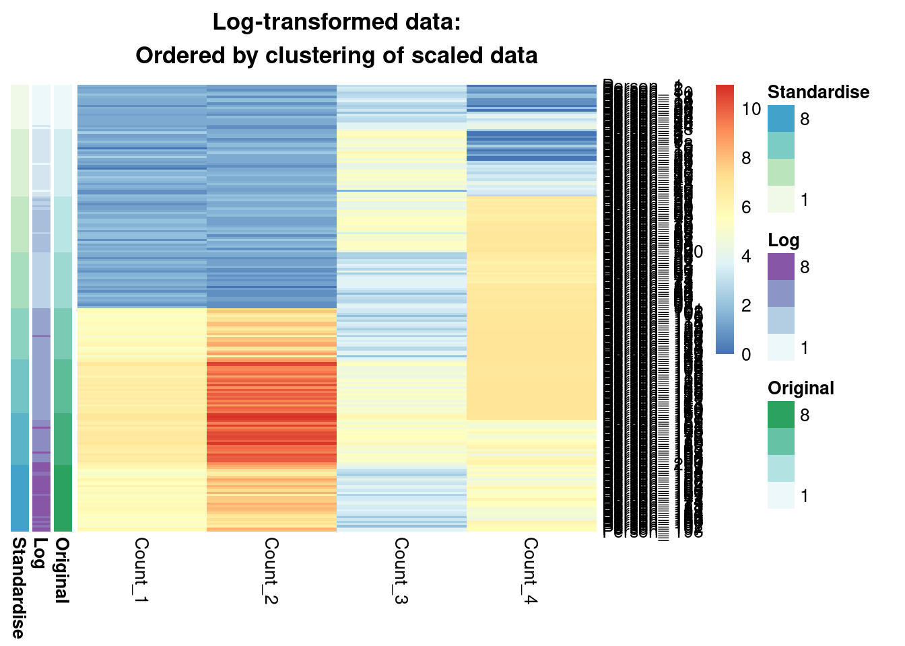
pheatmap(scaled_data[order(annotation_row[, 1]), ],
cluster_rows = F,
cluster_cols = F,
annotation_row = annotation_row,
main = "Standardised data:\nOrdered by clustering of original data"
)pheatmap(scaled_data[order(annotation_row[, 2]), ],
cluster_rows = F,
cluster_cols = F,
annotation_row = annotation_row,
main = "Standardised data:\nOrdered by clustering of log-transformed data"
)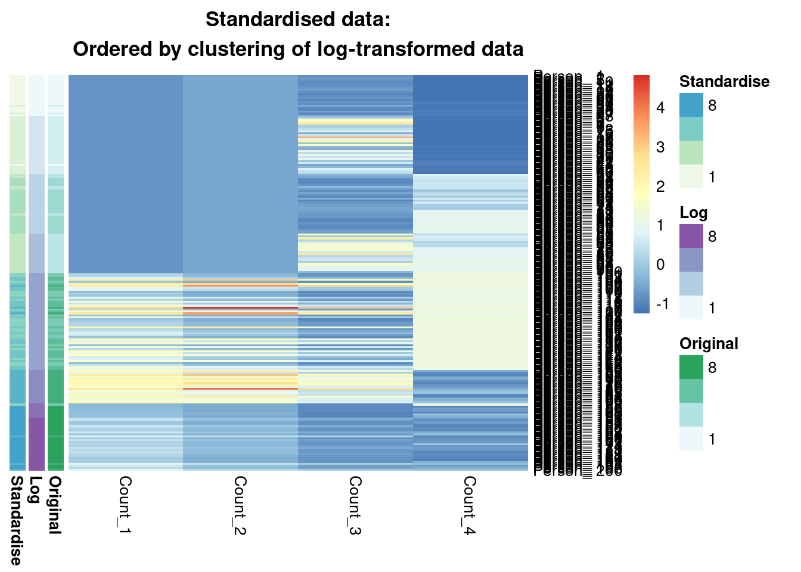
pheatmap(scaled_data[order(annotation_row[, 3]), ],
cluster_rows = F,
cluster_cols = F,
annotation_row = annotation_row,
main = "Standardised data:\nOrdered by clustering of scaled data"
)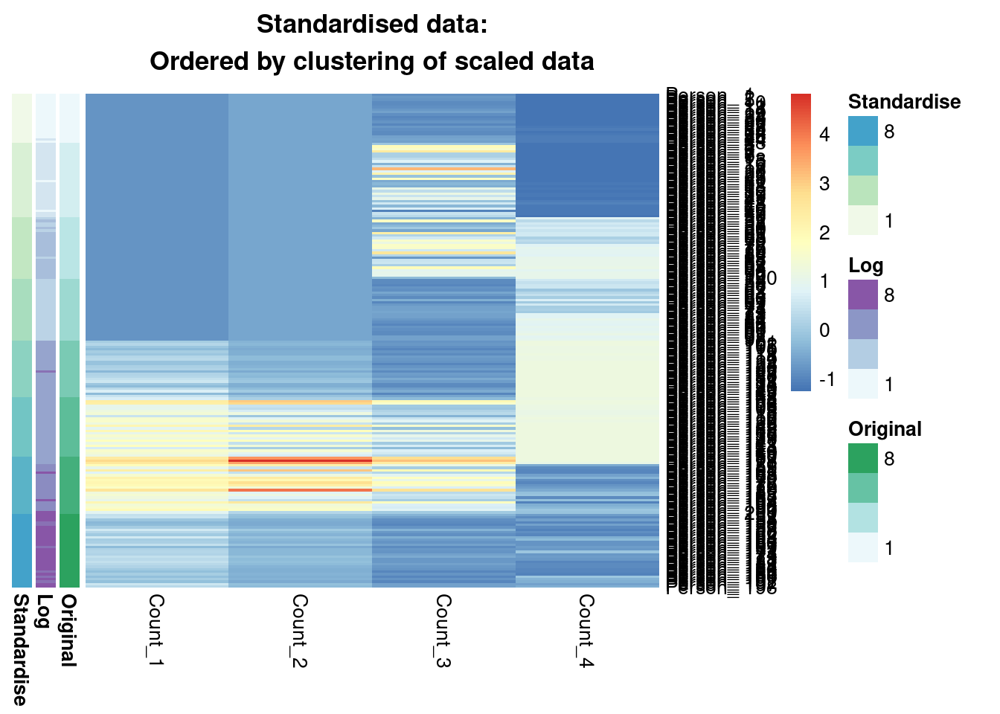
We comapre the similarity of the inferred clusterings using the Adjusted Rand Index. This scores clustering similarities, with 0 meaning the two partitions are no more similar then a random pair of clusterings is expected to be and 1 meaning they are identical.
ari_12 <- mcclust::arandi(annotation_row[, 1], annotation_row[, 2])
ari_13 <- mcclust::arandi(annotation_row[, 1], annotation_row[, 3])
ari_23 <- mcclust::arandi(annotation_row[, 2], annotation_row[, 3])
ari_mat <- matrix(c(1.0, ari_12, ari_13, ari_12, 1.0, ari_23, ari_13, ari_23, 1.0),
nrow = 3,
ncol = 3
) |>
set_colnames(c("Original", "Log-transformed", "Standardised")) |>
set_rownames(c("Original", "Log-transformed", "Standardised"))
knitr::kable(ari_mat, digits = 3)| Original | Log-transformed | Standardised | |
|---|---|---|---|
| Original | 1.000 | 0.702 | 1.000 |
| Log-transformed | 0.702 | 1.000 | 0.702 |
| Standardised | 1.000 | 0.702 | 1.000 |
Summary
We see that from the Gaussian mixture models perspective the original and standardised are interchangeable, leading to identical inference. Both datasets lead to a surprisingly similar clustering to the log-transformed data; 0.7 is not a low ARI. Furthermore, we can see in the annotated heatmaps that a large source of the contention is that one cluster found in the log-transformed data is considered as two separate groups in the original (cluster 6 in the log-transformed inference approximately captures clusters 6 and 5 from the other point estimates), and conversely cluster 8 in the original data splits into two clusters in the log-transformed data. Deciding which of these is more useful, or if we should use 7 or 9 clusters rather then 8 involves further thought and ideally conversation with a domain expert.
Reuse
Citation
BibTeX citation:
@online{coleman,
author = {Coleman, Stephen},
title = {Clustering Count Data},
url = {https://stcolema.github.io//posts/ClusteringCountData/clustering_count_data.html},
langid = {en}
}
For attribution, please cite this work as:
Coleman, Stephen. n.d. “Clustering Count Data.” https://stcolema.github.io//posts/ClusteringCountData/clustering_count_data.html.